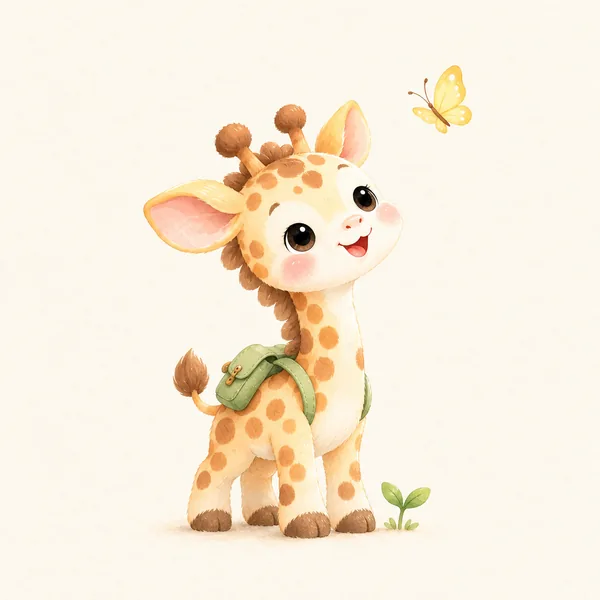

상담이라고 하면 오래 다니며 지난 일을 하나하나 꺼내야 할 것 같아 망설여지기도 합니다. 아들러 상담은 조금 다릅니다.
100년 전에 시작된 상담이지만, 오늘날 사람들이 상담에 바라는 모습과 놀라울 만큼 닮아 있습니다.
상담 방으로 들어가기지금 필요한 변화에 집중합니다.
아들러는 처음부터 회기를 정해 두고 상담했습니다. 대개 스무 번 안쪽에서 마무리했습니다. 끝이 보이는 상담이라 시작하는 마음이 가볍고, 상담하는 동안 무엇을 바꾸고 싶은지 더 또렷해집니다.

과거를 탓하기보다 지금의 나와 내가 바라는 내일을 함께 봅니다.
지나온 일은 분명 우리에게 영향을 줍니다. 그렇다고 과거가 나를 다 정해 버리지는 않습니다. 아들러는 사람이 앞으로 무엇을 바라느냐에 따라 지난 일을 기억하는 방식도, 지금 살아가는 방식도 달라진다고 보았습니다. 사람은 늘 새로 되어 가는 존재입니다.
필요한 정보와 방법을 나누고, 생활 속에서 해 볼 수 있게 돕습니다.
아들러 상담자는 이야기를 듣는 데서 멈추지 않습니다. 도움이 될 만한 생각과 방법을 함께 나누고, 집과 일터에서 직접 해 볼 수 있도록 곁에서 돕습니다. 아들러가 일찍부터 부모교육과 교사교육에 힘을 쏟은 것도 같은 까닭입니다.
정해진 틀에 사람을 맞추지 않고, 그 사람에게 맞는 방법을 찾습니다.
아들러 상담자가 늘 먼저 묻는 질문이 있습니다. "이 분에게는 무엇이 가장 잘 맞을까?" 사람을 이해하는 바탕은 굳게 지키면서, 방법은 그 사람에게 맞춰 자유롭게 고릅니다.
이론은 단단하고, 방법은 다양하다.
— 매너스터와 코르시니(Manaster & Corsini, 1982)
참고. Carlson, J., Watts, R. E., & Maniacci, M. (2006). Adlerian Therapy: Theory and Practice. APA.
여섯 자리 가운데 지금의 나에게 가까운 곳부터 열어보세요.